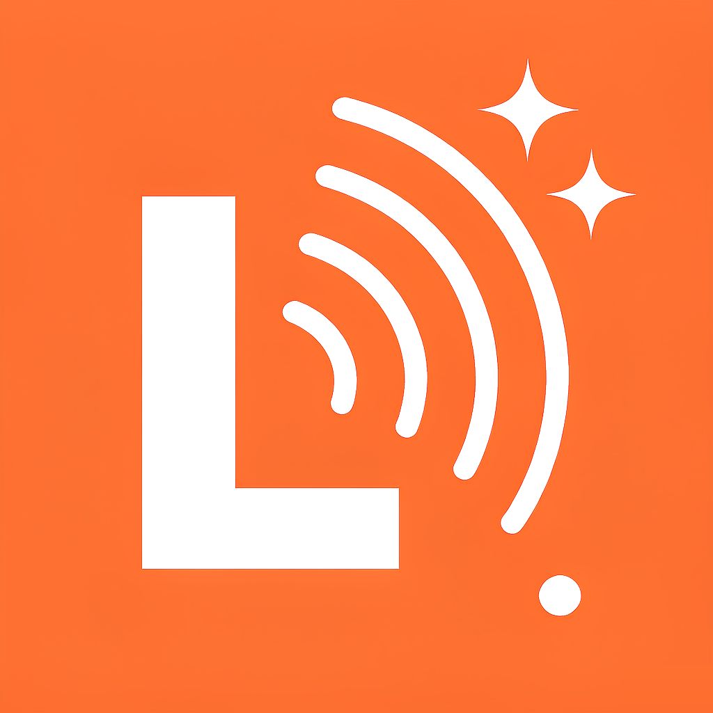
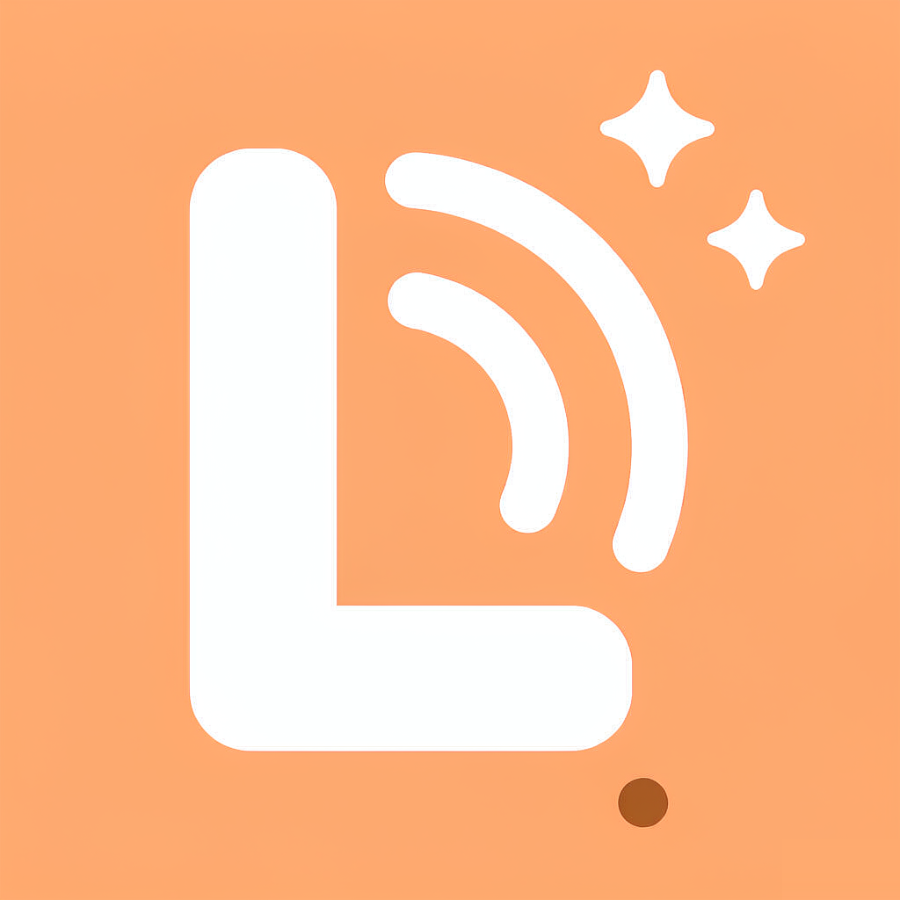
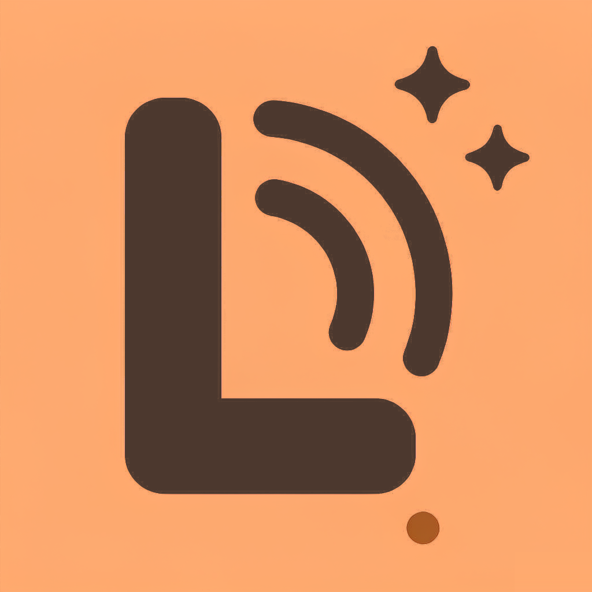

Langly · J 风格明亮配色优化
第四批 5 个方案 · 1024 × 1024 · 以 J（AI 发音点评）为骨架：构图精修 + 明亮配色

M · 日出橙
推荐 · J 直系精修四道完整递进的声波弧 + 两枚星芒统一移到弧外右上 + 右下白点。相对 J 修掉了游离短弧与星芒切断声波的问题，是最稳的「原味升级」。
M_sunrise_orange_L.png

N · 柠檬黄
推荐 · 最醒目 / 对比度最优深可可 L 与弧 + 珊瑚橙星芒与圆点。全场明度最高，也是唯一主图形对比度达 8.51:1 的一张，缩到通知栏小图标依然清楚。
N_lemon_yellow_L.png

O · 蜜桃杏
最柔和 · 仅适合大图标圆角白 L，声波精简为两道，白星芒 + 焦糖圆点。最轻快友好；但白 L 在浅底上只有 1.90:1，小尺寸会发糊。
O_peach_apricot_L.png

P · 琥珀珊瑚双色
推荐 · 最有设计感上黄下橙两块纯色、水平直线分界，白 L 横跨两色，四道弧 + 两枚星芒。编辑设计感最强，桌面上一眼认得出。
P_amber_coral_duet_L.png

Q · 蜜桃杏高对比
补强 · 本地改色衍生保留 O 的构图与明亮底，把白色图形换成与 N 同款深可可，对比度从 1.90:1 提到 5.79:1。这一版是本地像素改色衍生，非模型生成，不额外消耗积分。
Q_peach_highcontrast_L.png
- 弧线改为完整连续、等距递进，不再被星芒切断；模型把三道弧画成了四道（O 精简为两道），视觉更饱满，予以保留。
- 两枚四角星芒统一移到最外弧的右上方外侧，悬浮不压弧；删掉了 J 里游离的短线段。
- 保留识别骨架：大写 L + 声波弧 + AI 星芒 + 右下录音点，语义仍是「AI 听你讲、给发音反馈」。
- 配色整体提高明度，仍守暖色根（橙 / 黄 / 杏 / 珊瑚）；P 用双色块做层次而非渐变。
色彩令牌（实测值，供 Flutter / 设计稿落地对齐）
色值全部从成品 PNG 取样，不是提示词里的目标值。按「语义层」组织，组件只引用语义令牌，不硬编码原始色。
| 语义令牌 | 用途 | M | N | O | P | Q |
|---|---|---|---|---|---|---|
| --icon-bg | 背景 | #FD7031 | #FFE328 | #FDA96E | #FFB121 / #FF6E44 | #FDA96E |
| --icon-fg | 主体 L + 声波弧 | #FFFFFF | #4C382E | #FFFFFF | #FFFFFF | #4C382E |
| --icon-ai | 四角星芒（AI） | #FFFFFF | #FF5A36 | #FFFFFF | #FFFFFF | #4C382E |
| --icon-accent | 右下录音点 | #FFFFFF | #FF5A36 | #8A4B22 | #FFFFFF | #8A4B22 |
对比度实测（WCAG 非文本图形基线 3:1）
| 方案 | 主图形 / 背景 | 实测对比度 | 3:1 基线 | 适用 |
|---|---|---|---|---|
| M 日出橙 | #FFFFFF / #FD7031 | 2.79:1 | 未达 | 桌面大图标 |
| N 柠檬黄 | #4C382E / #FFE328 | 8.51:1 | 达标 | 全尺寸 |
| O 蜜桃杏 | #FFFFFF / #FDA96E | 1.90:1 | 未达 | 仅大图标 |
| P 双色块 | #FFFFFF / 上下两色 | 1.82 / 2.78:1 | 未达 | 仅大图标 |
| Q 高对比 | #4C382E / #FDA96E | 5.79:1 | 达标 | 全尺寸 |
说明：App 图标属品牌图形，严格来说 WCAG 3:1 针对的是 UI 控件与功能性图形，品牌 Logo 通常豁免；这里按设计系统规范从严标注，供后续出小尺寸 / 单色 / 通知栏图标时选型参考。N 的珊瑚橙星芒为 2.40:1，属装饰性点缀，不影响主体识别。
结论：要「明亮 + 全尺寸清晰」两项兼得，优先 N 或 Q；只看桌面观感，M 与 P 更出挑。
- 5 张均为 1024 × 1024 不透明 PNG、直角方形（圆角由系统遮罩生成，上方是 iOS 圆角模拟）。
- 模型生成的 M/N/O/P 已去除右下角工具水印：先量得水印在 x≥900 / y≥960、各图圆点均在 y<950，因此把覆盖区收紧为 x≥890 / y≥955，逐行取最左背景色填充，保留了背景纵向明暗且不误伤圆点。带水印原件归档在 original/（bright_ 前缀）。
- Q 由 O 本地改色衍生，无对应原件；改色用 G 通道还原抗锯齿覆盖度，焦糖圆点按规则原样保留。
- 本轮只写设计稿文件，未改 lib/、未动各平台 AppIcon 目录、未加依赖。
- 分批导航：17 案总览 · 第三批（含原型 J） · 第二批 · 第一批。